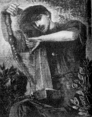

<html>
<head>
<title>The Annotated "Ripple"</title>
</head>
<body>
<i> "Let there be songs to fill the air"</i>

<H2><a name="ripple">The <i>Annotated</i> "Ripple"</a></H2>
An installment in <a href="gdhome.html"> The <i>Annotated</i> Grateful Dead Lyrics.</a><br>
By <a href="david.html">David Dodd</a><br>
1997-98 Research Associate, Music Dept., University of California, Santa Cruz
<hr>
<a href="copyrigh.html">Copyright notice</a>
<hr>
Two analyses of the lyric are available:
<ul>
<li>David Dodd's <a href="#analysis">essay</a>
<li>William C. Dowling's <a href="dowling.html">"Ripple": A Minor Excursus</a>
</ul>
<p>
Also, a sermon, <a href="greene.html">"No Simple Highway,"</a> by Elizabeth Greene, is available.
<hr>
<a href="#title"><b>"Ripple"</b></a>
<p>
Words by Robert Hunter; music by Jerry Garcia.<br>
("Ripple" composed and written by Jerry Garcia and Robert Hunter. Reproduced
by arrangement with Ice Nine Publishing Co., Inc. (ASCAP))<br>
<blockquote>
If my words did glow with the gold of sunshine<br>
And my tunes were played on the harp <a href="#strum">unstrung</a><br>
Would you hear my voice come through the music<br>
Would you hold it near as it were your own?<br>
<p>
It's a hand-me-down, the thoughts are broken <br>
Perhaps they're better left unsung<br>
I don't know, don't really care       <br>
<a name="let">Let there be songs to fill the air</a><br>
<p>
<a href="chorus"><i>(Chorus)</i></a><br>
<p>
Ripple in <a href="#psalm">still water</a><br>
When there is no pebble tossed<br>
Nor wind to blow <br>
<p>
Reach out your hand if your <a href="#psalm">cup be empty</a><br>
If your cup is full may it be again<br>
Let it be known there is a <a href="#fountain">fountain</a><br>
<a href="#hand">That was not made by the hands of men</a> <br>
<p>
There is a road, <a href="greene.html">no simple highway</a><br>
Between the <a href="light.html">dawn</a> and the <a href="#dark">dark of night</a><br>
And if you go no one may follow <br>
<a href="#path">That path is for your steps alone</a><br>
<p>
<i>(Chorus)</i>
<p>
<a href="#leader">You who choose to lead must follow</a><br>
But if you fall you fall alone<br>
If you should stand then who's to guide you?<br>
If I knew the way <a href="#take">I would take you home</a><br>
</blockquote>
<p>Hunter has posted the <a href="http://www.dead.net/RobertHunterArchive/files/HandwrittenLyrics/Ripple.html" target="new">manuscript</a> of an early draft of the song in his archives.
<hr>
<H3><a name="analysis">Analysis</a></H3>
"Ripple" is a song lyric by Robert Hunter. Its genre, therefore,
is song. A true song is meant to be sung, and so its words must
be easy to remember, unless it is an experimental or art song.
But Hunter wrote "Ripple" in the folk song tradition during the
late 1960's, with overtones of that Haight-Ashbury era, such as a
sense of cosmic oneness, and of East meeting West.
<p>
Hunter, in choosing the folk lyric format, has infused it with
something new. The first verse, addressing the listener, is about
song, about listening to the song and making it your own. Hunter
begins the verse by invoking the elements of song: words and
tune, so that the listener is prepared to think about the song.
The poet expresses concern that the song be sung by other people,
opening up a discussion of the relationship between the singer
and the listener, who will also, it is hoped, come to <i>be</i>
the singer, in turn.
<p>
So the relationship between poet and reader is unity; they are
both the poet. In this way, the original poet breaks out of
mortality, since his thoughts will continue to generate new
thoughts.
<p>
The next verse continues this theme, but points out that the
identification between singer and listener can never be total,
since it is questionable whether any of the original poet's
thoughts will actually occur to the person who is now singing the
song. But the poet concludes that even though 'the thoughts are
broken,' it is worthwhile to have songs.
<p>
The chorus is the main puzzle of the song, as highlighted by the
title. It is set apart formally from the rest of the song, being
a seventeen-syllable <a href="http://www.faximum.com/aha.d/haiku.htm" target="new">haiku</a>. Following the first two verses, it
suggests that thought is like a ripple, not caused by anything,
and doomed to be fleeting, not to be held. Hunter chose an Asian
verse form to express this idea, which is contrary to Western
civilization's principle of logical, rational thought. Hunter
poses a counter-argument. It is not worthwhile to believe that
reason can be imposed on thinking, or that anything reasonable
can come from thinking, since communication of thought will
always be flawed. It is possible that Hunter's thoughts were born
from the experience of altered states, and the frustration that
goes with any attempt to describe experience in an altered state.
His choice of a pool of water being momentarily disturbed by a
ripple is in accordance with <a
href="http://etext.lib.virginia.edu/stc/Coleridge/stc.html" target="new">Samuel Taylor Coleridge's</a> imagery in
describing the fleetingness of the altered state in <a href="http://etext.lib.virginia.edu/stc/Coleridge/poems/Kubla_Khan.html" target="new">"Kubla Khan"</a>:
<p>
<blockquote>
                      Then all the charm<br>
Is broken--all that phantom-world so fair<br>
Vanishes, and a thousand circlets spread,<br>
And each mis-shape the other. Stay awhile,<br>
Poor youth! who scarcely dar'st lift up thine eyes--<br>
The stream will soon renew its smoothness, soon<br>
The visions will return! And lo, he stays,<br>
And soon the fragments dim of lovely forms<br>
Come trembling back, unite, and now once more<br>
The pool becomes a mirror."
<p></blockquote>
(Echoes there of <a href="darkstar.html">"Dark Star,"</a> as well. Hmmm.)
<p>
The next two verses introduce new themes. The first contains a
benediction, wishing the listener a "full cup," or a happy life.
This cup, moreover, can be refilled at a fountain which, since it
was not made by human hands, represents a cosmic or universal
level of being. The next verse takes the song from the universal
back to the individual. The path between dawn (birth) and dark
(death) is a metaphor for life, each life being individual.	 (For an alternate take, see <a href="#dark">email from Linda Gershon</a>)
<p>
The chorus follows, and in this context the ripple has become a
symbol of an individual life, caused by nothing a disappearing
back into still water, back into the fountain not made by people.
A life is a ripple. All life is still water. The chorus, then, is
interpreted differently each time. The first time a ripple is a
thought in an individual mind; the second time a ripple is an
individual life in the pool of universal life.
<p>
The final verse conveys optimistic hopelessness. The poet is
compassionate, as shown by the last line, but wants us to realize
that there are no guarantees about life.
<hr>
<h3><a name="title">"Ripple"</a></h3>
Lyric written in London, 1970. According to an interview with Hunter in a documentary film by Jeremy Marre, "Ripple," <a href="brok.html">"Brokedown Palace"</a> and <a href="tlay.html">"To Lay Me Down"</a> were all composed in one afternoon, over a half-bottle of retsina. (The film aired on VH-1 on April 16, 1997.)
<p>
Musical details:
<ul>
<li>Key: G
<li>Time signature: 4/4
<li>Chords used: G, D, C, A, F#, G7, Am
<li>Songbook availability:
<ul>
<li><cite><a href="songbook.html#gdvol1">Grateful Dead</a></cite>
<li><cite><a href="songbook.html#superstar">Grateful Dead: Guitar Superstar Series</a></cite>
<li><cite><a href="songbook.html#anthguitar">Grateful Dead Anthology: Guitar</a></cite>
<li><cite><a href="songbook.html#American">Classic Grateful Dead: Selections From "American Beauty"</a></cite>
<li><cite><a href="songbook.html#anthologyII">Anthology, vol. II</a></cite>
</ul>
</ul>
First performed on August 18, 1970, at the Fillmore West in San Francisco. "Ripple" appeared in the middle of the first set, an acoustic set,
between "Dark Hollow" and <a href="brok.html">"Brokedown Palace."</a> The "Brokedown Palace" was also
a premiere, as was the show's <a href="operator.html">"Operator,"</a> and
<a href="truckin.html">"Truckin'"</a>.
<p>
Recorded on:
<ul>
<li><cite><a href="discog1.html#american">American Beauty</a></cite>
        <ul>
        <li>This version included on <cite><a href="discog2.html#trip">What a Long, Strange Trip It's Been</a></cite>
        </ul>
<li><cite><a href="discog2.html#reckoning">Reckoning</a></cite>
<li>Garcia's <cite><a href="jgdisc.html#almost">Almost Acoustic</a></cite>
<li>Robert Hunter on his <cite><a href="huntdisc.html#box">A Box of Rain</a></cite>
</ul>
<p>
Covers:
<ol>
<li>Chris Hillman (formerly of the <a href="http://www.uark.edu/~kadler/rmcguinn/">Byrds</a>) on <cite>Morning Sky</cite>
<li><a href="http://www.janesaddiction.com">Jane's Addiction</a> on <cite><a href="tribute.html#deadicated">Deadicated</a></cite>
<li>Perry Farrell's album <cite>Rev</cite>
<li>The New Riders of the Purple Sage on <cite>Live in Japan</cite>
<li><a href="http://www.jimmiegilmore.com/" target="new">Jimmie Dale Gilmore</a> on his <cite>One Endless Night</cite>
</ol>
<p>
It has found a permanent place in the Dead's live repertoire, but was reprised on special
occasions, such as the 15th Anniversary shows in San Francisco and New York, which included
acoustic sets.
<p>
This note from a reader:

<blockquote>
Date: Wed, 6 Mar 2002 09:07:54 +1100<br>
From: John Low <JLow@bmcc.nsw.gov.au><br>
<p>
Hello David,
<p>
Greetings once again from the Blue Mountains in Australia  (maybe you'll
remember me and my Dire Wolf story sent last year!) and many thanks for
your recent newsletter! As it happens, I ordered a copy of the "Grateful Dead
Reader" through my local bookshop before Christmas and it arrived in
January. I am enjoying it immensely ... so much good writing that (not
surprisingly) I've never seen before! Sincere thanks to you, and your wife
Diana, for putting it all together!
<p>
Being an admirer of the wonderful though tragic Richard Brautigan, I was
pleased to discover that you published his quirky little poem about the
Dead getting busted. This prompts me to ask if you are aware of an anecdote
regarding Brautigan and the Dead's American Beauty album, recounted by his
friend Keith Abbott in "Downstream From Trout Fishing in America" (Santa
Barbara: Capra Press, 1989)? In this memoir Abbott recalls a dinner party
at Brautigan's Bolinas residence in the early 1970s at which the poet Robert
Creeley was a guest.
<p>
<blockquote>
"Just before dinner was served, Richard made a big show of putting on a
Grateful Dead record. He said that he had been saving the record as a
surprise for Creeley. Bob nodded his thanks. When the first cut started
Creeley brought his head up abruptly "This is my favourite cut on that
record" he announced. Richard beamed happily. As Creeley listened to the
song Richard told a story of all the obstacles that he had encountered
during the day in his attempt to find this particular record for Bob.
Content that he had made Creeley happy, Richard went back to the kitchen
to attend to dinner. When the song was over, Creeley got up, went over to the
stereo and, trying to play the cut again, raked the needle across the
record, ruining it. "Uh-oh" he said. Then he went back to the couch and
resumed his discussion. At the sound of the record's being ruined, Richard
came rushing out of the kitchen and stood there, watching the whole
'uh-oh' performance by Creeley. Going over to the stereo he brought out a second
copy of the album from the stack alongside it. In his own funny , precise
way, Richard congratulated himself. "I'm, ready for Bob this time" he
boasted. Then he went on to relate how Creeley had wrecked the very same
album on a previous visit."
</blockquote>
<p>
For ages I wondered which album it was that Brautigan played and which
song was Creeley's "favourite cut". Fortunately Robert Creeley has a presence
on the web so recently, I plucked up the courage to email him with my trivial
question. Within days I had a very generous and friendly reply:
<p>
<blockquote>
Dear John Low,
<p>
That was one drunken evening, like they say -- of probably all too many.
Richard knew my failings, call them, and so had backed up the record he
expected me witlessly to scratch with another, which I seem then to have
x'd as well.  Ah eagerness -- and drink.  We were neighbors at
that time in Bolinas, with him just down the road from us headed into
town.
<p>
Anyhow the terrific song, as I remember at least, is Robert Hunter's
"Ripple" and one of my prized possessions is Robert Hunter's collected
lyrics, A Box of Rain, which he generously sent me some years after.
Anyhow I love that echoing "Ripple in still water..."
<p>
So onward...  You must know Bob Adamson is my old friend indeed -- and a
great poet.  You have dynamite writers out there!
<p>
Best to you,<br>
Robert Creeley
</blockquote>
<p>
A bit of trivia, yes, but isn't it nice to discover these links between
people you admire and whose work you enjoy? Forgive me, though, if you are
already familiar with it.
<p>
With very best wishes from down under,
<p>
John Low<br>
Blue Mountains City Library
</blockquote>
<p>
And another note from a reader:
<blockquote>
Date: Fri, 01 Sep 2006 03:07:18 -0500<br>
From: Patrick J. Volkerding <volkerdi@slackware.com><br>
Subject: There is a road.  :-)
<p>

Greetings, my friend.  It is an honor to finally have an excuse to write
to you.
<p>
I have enjoyed your work immensely, so thank you very much.  I note that
you're still doing quite well on Google!  I have a bookmark somewhere,
but it's so much easier to just Google for "annotated".  :-)  It's still
the second hit for that keyword, and the first actual annotation.  You
were great on "Dead to the World"!  We were expecting our daughter Briah
at the time, and got a big kick out of "What's Become of the Baby-O".
<p>
I have a couple of comments that I hope may be of some value to you.
<p>
[...]
This next one I considered a real jewel of a find, and it made me wonder
if Hunter was familiar with this particular text because the
similarities between it and Ripple seemed beyond coincidence.  Lately
though, I've been less surprised by coincidence -- the control center
seems to have turned it up to 11.
<p>
I've been studying Eastern ideas of many kinds, and recently my
attention was drawn to Kabir, the Indian mystic said to have lived from
1398 to 1518.  The Wikipedia article on Kabir is quite interesting, and
after reading one of his songs (in Wikipedia's "Satguru" article), I
went looking for more Kabir.  I got to one particular song and was
stunned by the density of Ripple motifs in it, particularly in the
second of the three paragraphs.  Pointing them out is not necessary, but
like Hunter's lyrics and Kabir's songs, reading between the lines will
always be required to get the full effect.
<p>
Here's a link to Sacred Texts where I found Kabir's song, III. 48. tû
surat nain nihâr:

<a href="http://www.sacred-texts.com/hin/sok/sok77.htm">http://www.sacred-texts.com/hin/sok/sok77.htm</a>
<blockquote>
OPEN your eyes of love, and see Him who pervades this world I consider it well, and know that this is your own country.<br>
When you meet the true Guru, He will awaken your heart;<br>
He will tell you the secret of love and detachment, and then you will know indeed that He transcends this universe.<br>
This world is the City of Truth, its maze of paths enchants the heart:<br>
We can reach the goal without crossing the road, such is the sport unending.<br>
Where the ring of manifold joys ever dances about Him, there is the sport of Eternal Bliss.<br>
When we know this, then all our receiving and renouncing is over;<br>
Thenceforth the heat of having shall never scorch us more.<br>
<br>
He is the Ultimate Rest unbounded:<br>
He has spread His form of love throughout all the world.<br>
From that Ray which is Truth, streams of new forms are perpetually springing: and He pervades those forms.<br>
All the gardens and groves and bowers are abounding with blossom; and the air breaks forth into ripples of joy. <br>
There the swan plays a wonderful game,<br>
There the Unstruck Music eddies around the Infinite One;<br>
There in the midst the Throne of the Unheld is shining, whereon the great Being sits--<br>
Millions of suns are shamed by the radiance of a single hair of His body.<br>
On the harp of the road what true melodies are being sounded! and its notes pierce the heart:<br>
There the Eternal Fountain is playing its endless life-streams of birth and death.<br>
They call Him Emptiness who is the Truth of truths, in Whom all truths are stored!<br>
<br>
There within Him creation goes forward, which is beyond all philosophy; for philosophy cannot attain to Him:<br>
There is an endless world, O my Brother! and there is the Nameless Being, of whom naught can be said.<br>
Only he knows it who has reached that region: it is other than all that is heard and said.<br>
No form, no body, no length, no breadth is seen there: how can I tell you that which it is?<br>
He comes to the Path of the Infinite on whom the grace of the Lord descends: he is freed from births and deaths who attains to Him.<br>
Kabîr says: "It cannot be told by the words of the mouth, it cannot be written on paper:<br>
It is like a dumb person who tastes a sweet thing--how shall it be explained?"
</blockquote>
<p>
I hope you enjoy this small contribution as much as I've enjoyed reading
the many observations online and in your first edition.  May you have
many more happy editions.  Andrea (my wife) and I were theorizing this
afternoon that a couple of dozen revisions from now your book will
finally manage to tie together all world philosophies and religions,
will be about a foot thick, and will more or less complete the Great
Work by revealing every esoteric "secret" to those who can hear.
Perhaps your book and the Grateful Dead will play a critical role in
helping unite mankind.  Even more.  :-)
<p>
All the best,
<p>
Patrick Volkerding
<p>

PS:  I hereby place this email in the public domain.
</blockquote>

<hr>
<p>
<a name="strum"><h3>On the harp unstrung...</h3></a>
Chris Hillman, in his recording of "Ripple," sang the line as "...on the heart of a strum."
<p>
This note from a reader:
<blockquote>
Date: Thu, 26 Oct 95 06:31:38 0500<br>
From: David Gold<br>
<p>
David--
<p>
Nice work on "Ripple."
<p>
"the harp unstrung" recalls <a href="http://www.spinfo.uni-koeln.de/~dm/yeats.html">[William Butler] Yeat's</a>
<a href="http://plagiarist.com/poetry/1178/">"The Madness of King Goll"</a>:
<p>

<font size=-1>
(An illustration of W.B. Yeats as King Goll by his father, John Butler Yeats, which accompanied the publication of the poem.)
</font>
<p>
Speaking of the tympan [in earlier versions, a "harp all songless"] that he has found:



<p>



"When my hand passed from wire to wire<br>



It quenched, with a sound like falling dew<br>



The whirling and the wandering fire<br>



But lift a mornful ulalu<br>



For the kind wires are torn and still<br>



And I must wander wood and hill<br>



Through summer's heat and winters cold<br>



They will not hush..."etc.



<p>



Perhaps not consciously, of course, but the thought of the unstrung harp



being able to produce music is, in this light, much more poigniant.



</blockquote>



This tip led me on a hunt for information about this King Goll, who was an Irish king of



legend, having lived in the third century. Oddly, this is also the time when King Cole



(close assonance) of Britain was supposed to have reigned. See the note in <a href="alligato.html#cole">The



Annotated "Alligator"</a> regarding Old King Cole.



<p>



And I have always wondered about an episode in <a href="http://www.eduplace.com/author/vanallsburg/" target="new">Chris Van Allsburg's</a> wonderful book,



<cite>The Mysteries of Harris Burdick</cite> (Boston: Houghton Mifflin, 1984), entitled



"The Harp." (This book is a collection of drawings, with titles and first lines for each,



presented as a source of inspiration for children to write their own stories to go with



the drawings.) The first line given is "So it's true, he thought, it's really true." And



the drawing shows a boy peering at a stream-fed pond, beside which sits a harp; and there



is an expanding set of ripples beside the harp. Hmmmm. Wish I could reproduce the picture



here--maybe I'll write to Mr. Van Allsburg for permission.



<hr>



<H3><a name="psalm">"Still Water" and "If your cup be



empty..."</A></H3>



Several lines in this lyric conjure up the 23rd Psalm, which for



many



listeners will be an evocation of peace and reassurance. In



particular, the



lines referring to "still water," the filling of an empty cup,



and the



walking on a path in the shadow of the dark of night are strong



references.



<p>



Hunter invokes the psalm associations in the first verse, with



his mention



of the traditional psalmist's accompaniment, the harp.



<p>



The Psalm:



<p>



<blockquote>



The Lord is my shepherd, I shall not want<br>



He maketh me to lie down in green pastures<br>



He leadeth me beside the still waters<br>



He restoreth my soul<br>



He leadeth me in the paths of righteousness for his name's



sake<br>



Yea, though I walk through the valley of the shadow of death<br>



I will fear no evil, for thou art with me<br>



Thy rod and thy staff they comfort me<br>



Thou preparest a table before me in the presence of mine



enemies<br>



Thou annointest my head with oil, my cup runneth over<br>



Surely goodness and mercy shall follow me all the days of my



life<br>



And I will dwell in the house of the Lord forever<br>



</blockquote>



<p>



In some ways, the song could be viewed as an updating, or as a



humanizing,



of the Psalm. <a href="biblio.html#bible"><cite><b>The



Interpreter's Bible</cite></b></a>



 states that "psalms are also notable as being the literary



record of a reproducible religious experience. ... Later generations can...stand, as it



were, on their shoulders; they can think their thoughts after them and catch



some of their faith and vision." (v. 4, p. 4)



<p>



This is a remarkable passage, in that it can be seen as shedding



direct light on Hunter's line "it's a hand-me-down, the thoughts are broken..."



But the poet does have a psalmist's duty to hand down his version of the



religious experience through his poetry. In this case, the psalmist admits,



and even celebrates, his humanity: "If I knew the way, I would take you



home." <i><a href="ambig.html">"If I knew."</a></i> But of course, he doesn't know, because he is human.



<p>



See the note in <a href="come.html#cup">"Comes A Time"</a> regarding Yeats' poem, "The Empty Cup."



<p>



And the 23rd Psalm plays a role in two other Hunter



lyrics: "Alabama Getaway;" and the unrecorded song from the <b>Eagle Mall Suite</b>,



"John Silver," both of which mention the Valley of the Shadow.



<hr>



<a name="leader"><h3>You who choose to lead must follow</h3></a>



Cf. <cite>Mark</cite>, Chapter 10, vv. 43 and 44: "...and whosoever would be



first among you must be slave of all."



<p>



This addition from a reader:<br>



<p>



<blockquote>



From pubblan@amber.indstate.edu<br>



Date: 20 Mar 1995 10:29:10 EST <br>



<p>



Regarding the line in Ripple:<br>



"You who choose to lead must follow"<br>



<p>



There is this passage from the <cite><a href="http://www.wam.umd.edu/~stwright/rel/tao/TaoTeChing.html">Tao te Ching</a></cite>:<br>



<blockquote>



"Therefore, desiring to rule over the people,<br>



One must in one's words humble oneself before them<br>



And, desiring to lead the people,<br>



One must, in one's person, follow behind them."<br>



</blockquote>



vic flick <br>



</blockquote>







<hr>



<a name="fountain"><h3>fountain</h3></a>



<a href="biblio.html#cirlot">Cirlot,</a> in <cite>A Dictionary of



Symbols</cite>:<br>



<blockquote>



"<b>Fountain</b> (or <b>Source</b>) In the image of the



terrestrial Paradise, four rivers are shown emerging from the



centre, that is, from the foot of the Tree of Life itself, to



branch out in the four directions of the Cardinal Points. They



well up, in other words, from a common source, which therefore



becomes symbolic of the 'Centre' and of the 'Origin' in action.



Traditions has it that this fount is the <i>fons juventutis</i>



whose waters can be equated with the 'draught of immortality'--



<i>amrita</i> in Hindu mythology. Hence it is said that water



gushing forth is a symbol of the life-force of Man and of all



things. For this reason, artistic iconography very frequently



uses the motif of the mystic fount." (pp. 112-113)



</blockquote>



<hr>



<a name="hand"><h3>That was not made by the hands of men</h3></a>



Compare the lines in the Merle Travis song <a href="http://www.mudcat.org/@displaysong.cfm?SongID=2784">"I am a Pilgrim"</a>:



<blockquote>



"There is a home in that yonder city<br>



That was not made by hand."



</blockquote>



<hr>



<h3><a name="take">I would take you home</a></h3>



This line presages the Barlow/Mydland song, <a href="take.html">"I Will Take You Home"</a>.



<hr>
<h3><a name="dark">Between the dawn and the dark of night</a></h3>
This note from a reader:
<blockquote>
Subject: New Dead Fans; Some Thoughts on Ripple<br>
Date: Wed, 21 Jun 2000 02:57:14 -0700 (PDT)<br>
From: Linda Gershon <lgershon@yahoo.com><br>
David,
<p>
I'm pleased to report a recent example of something
I'm sure you already know -- namely, that the Dead
live on not just in their longtime fans but in
gaining new converts every day; and not just kids
getting their first exposure, but also boomers who
should have, but didn't, get into them before.  While
my devotion is coming up on thirty years (a source
of both pride and abject terror), my sister, two
years older, first heard Ripple played at a wedding
recently in lieu of Here Comes the Bride. (What an
excellent replacement!)  Apparently, this was the
first time she had ever really listened to a Grateful
Dead song (you can tell how influential I was) and
promptly went out and bought American Beauty, report-
ing that several other wedding guests had been simi-
larly impressed.
<p>
So this news, along with the fact that Ripple is often
my favorite Dead song and always on the leader board,
prompted me to revisit the Ripple section of your
lyrics site.  I'm guessing I haven't read even a
significant fraction of everything that's been writ-
ten about this poem set to music; but, from what I
have read, there seems to be pretty much a consensus
concerning the lyric "There is a road, no simple
highway, between the dawn and the dark of night,"
the prevailing view being that the dawn and the
dark represent birth and death, respectively, and
that the fact that there's a road instead of a high-
way between them means that life is challenging,
takes a lot of turns, is not a straight or simple
or obvious path, etc.
<p>
But my take on these words has always been somewhat
different.  To me, the dark represents despair,
bleakness, unhappiness, confusion, cluelessness, etc.,
while the dawn means contentment, clarity, revela-
tion, light, optimism, etc.  Again, what's between
them is arduous, difficult to navigate and must be
discovered on one's own, and not easy or obvious or
spelled out anywhere -- but it's to get from dark
to dawn, not the other way around.  Yeah, I know the
lyric refers to dawn first, but this obviously
serves the prosody, plus it would not be so unusual to
speak of the road between there (the destination)
and here (the starting point), rather than the one
between here and there.
<p>
At first, I thought I must either be totally off
base or the only one right; but, lately it occurs
to me (sorry -- I couldn't resist) that my long-
time take doesn't really conflict with the birth
and death interpretation, but may be simply comple-
mentary.  I'm sure Hunter wouldn't tell us -- the
sly bastard -- but I just thought I would throw
this in the fountain.
<p>
By the way, the grossly over-used term "awesome"
truly does apply to your web site.  It's an heroic
ongoing achievement.  Thanks.
<p>
Linda

</blockquote>
<hr>
<h3><a name="path">That path is for your steps alone</a></h3>


This note from a reader:


<blockquote>


Subject: ripple stuff<br>


Date: Fri, 13 Dec 1996 15:39:53 -0600 (CST)<br>


From: Jack Straw <AJB5383@tntech.edu><br>


<p>


<blockquote>


"that path is for


 your steps alone"


</blockquote>


<p>


compare to this quote from <a href="http://jefferson.village.Virginia.EDU/whitman/" target="new">[Walt] Whitman's</a> "Song of Myself"(46):


<blockquote>


"Not I--not anyone else, can travel that road for you,<br>


 You must travel it for yourself."


</blockquote>


from "Song of Myself" in Walt Whitman, selected and with notes by Mark van


Doren (New York: Viking Press, 1945), p. 127.


<p>


Aaron Bibb


</blockquote>

<p>

And from another reader:

<blockquote>

Subject: Thoughts on Ripple<br>

Date: Thu, 30 Jan 97 12:55 EST<br>

From: Dick Katz <0002020180@mcimail.com>

<p>

I was just wandering through your site and the notes on "Ripple" in particular.

The lines "...and if you go, no one may follow, that path is for your steps

alone"  always remind me of the third verse of <a href="eyes.html">"Eyes of the World"</a> that begin

"Sometimes we live no particular way but our own" which to me gets to the very

essence of the Dead experience which is to simply be who you are.

<p>

Just random thoughts.  Hope all is well with the new family.  The site is still

one of the best things on the net.

</blockquote>


<p>

And yet another:

<blockquote>

Subject: ripple

Date: Sun, 13 Apr 1997 19:26:06 -0700

From: Tony Kullen <mullet@gladstone.uoregon.edu>

<p>

David,

<p>

I was just reading Nietzsche's preface to his work <cite<Daybreak</cite>, and was

reminded of the line "that path is for your steps alone" in Ripple.

Nietzsche's text is referring to the search for solitude. He says:

<blockquote>

"For he who proceeds on his own path in this fashion encounters no one: this

is inherent in 'proceeding on one's own path.' No one comes along to help

him: all the perils, accidents, malice and bad weather which assail him he

has to tackle by himself. For his path is his alone."

</blockquote>

When I read that last line, i had to check the Ripple annotation (which, of

course, interrupted my homework, but who cares.) and, when I saw other

references for that line but not this one, I felt compelled to write. i hope

it is a help.

<p>

Peace,<br>

Tony Kullen

</blockquote>

<hr>



Keywords: @harp, @music, @water, <a href="home.html">@home</a>, @haiku<br>



DeadBase code: [RIPP]



<hr>



First posted: February, 1995<br>



Last updated: September 1, 2006

<pre>































































































































</pre>



</body>



</html>








